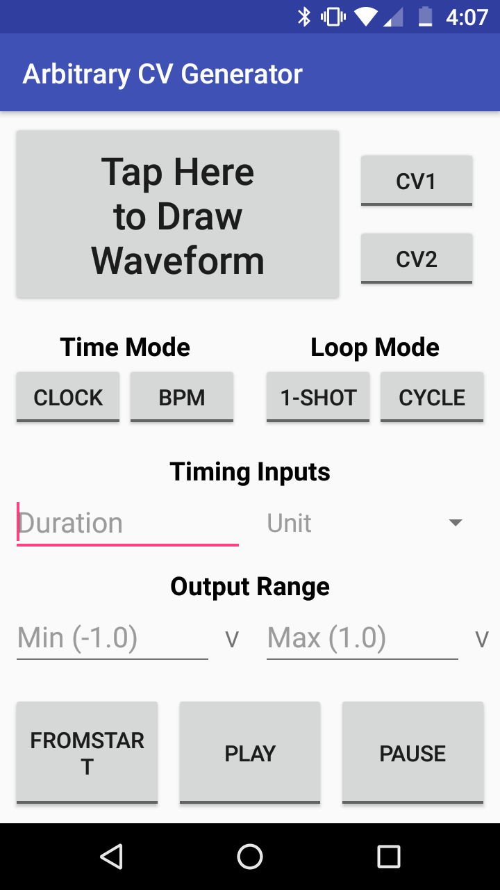
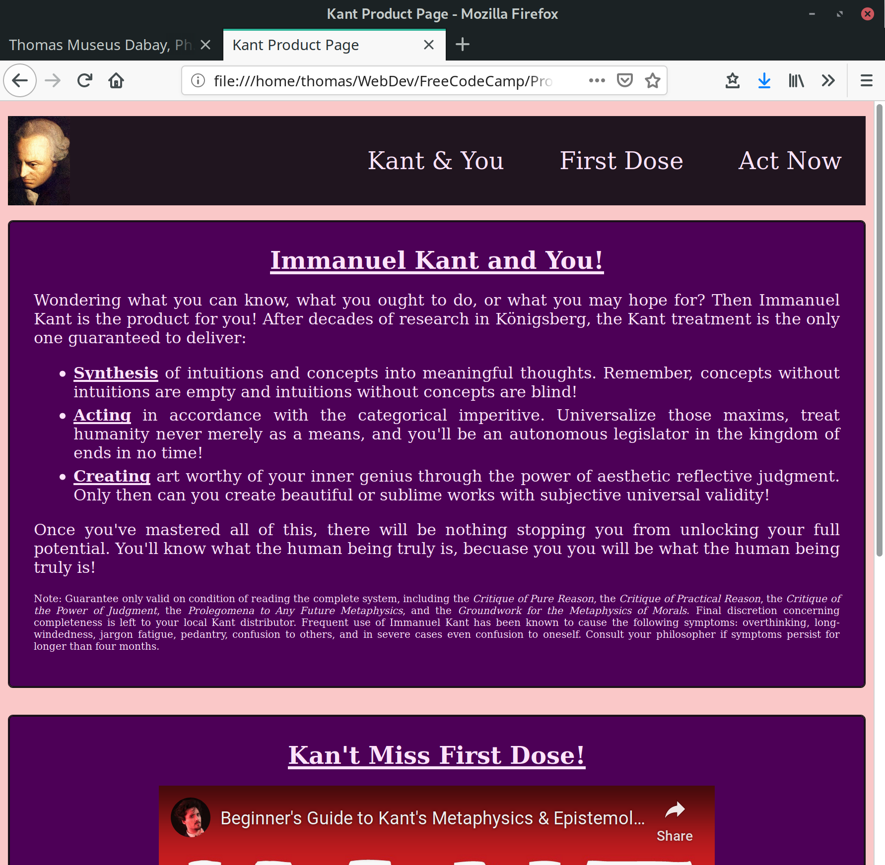
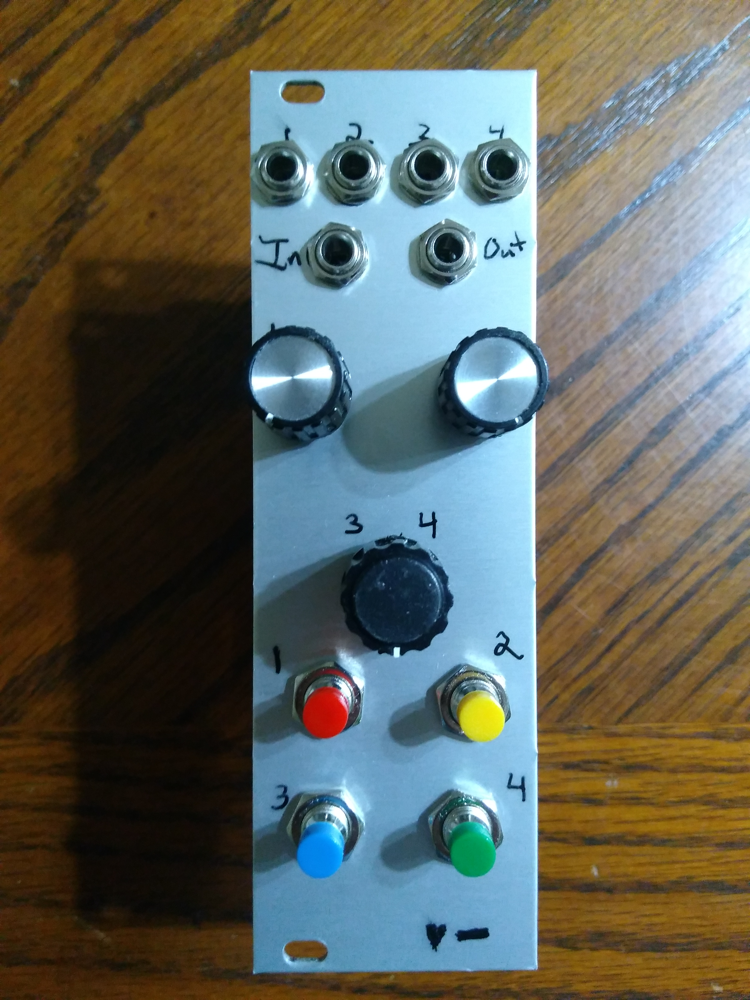
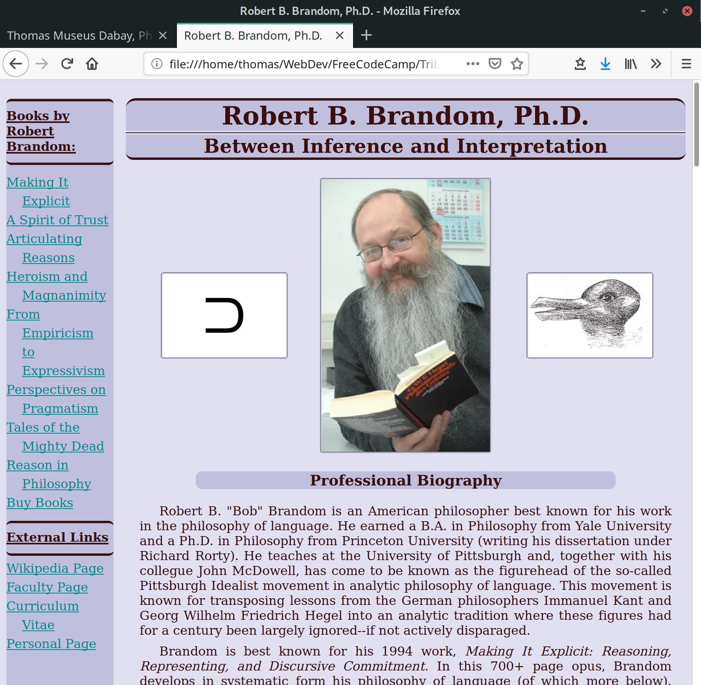
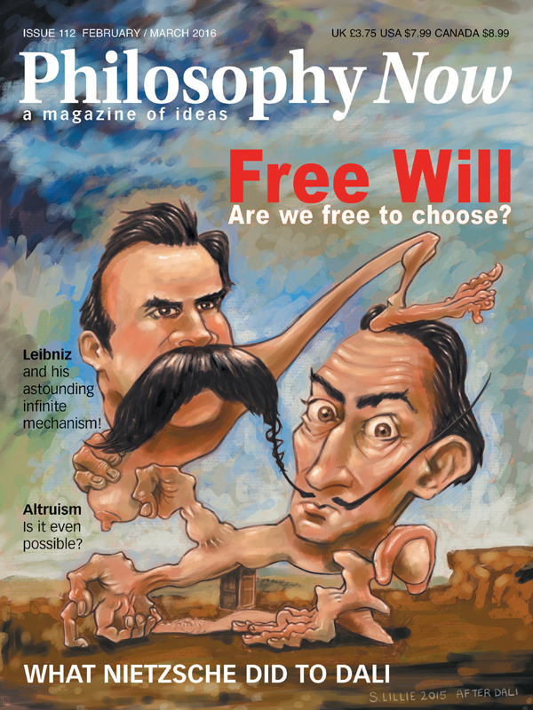
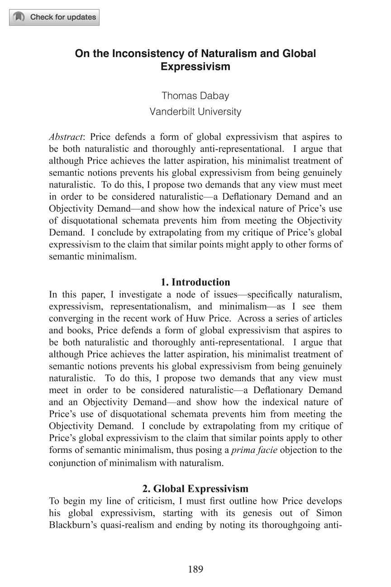
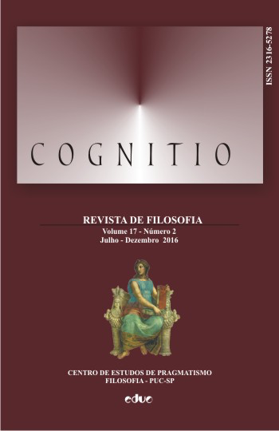
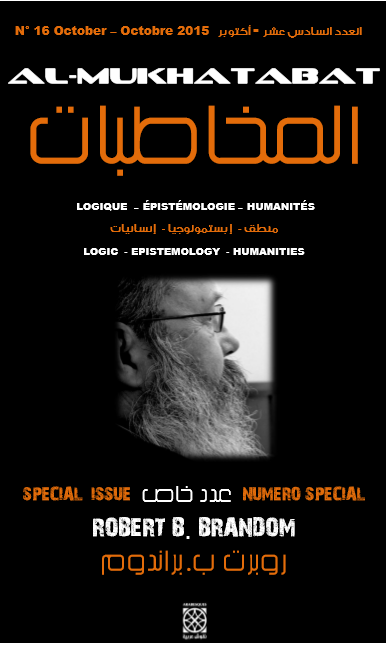
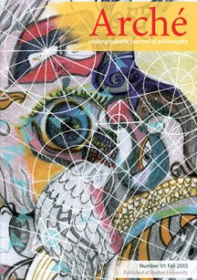

Hi there, I'm
Web Developer,
Analytic Philosopher,
Music Tech Enthusiast
Arbitrary CV Generator Android App
Immanuel Kant Product Page
Mnemonic Eurorack Module
Robert Brandom Tribute Page
Minivan Keymaps
Goldilocks Naturalism
Justifying Our Moral Judgments
Pragmatist Anti-Skepticism
Why Peirce's Anti-Intuitionism is not Anti-Cartesian
On the Inconsistency of Naturalism and Global Expressivism
Knowability, the End of Inquiry, and Epistemic Hope
Transposition as Naturalistic Metaphysics
A Modified Account of Peirce's A Priori and Scientific Modes of Inquiry
